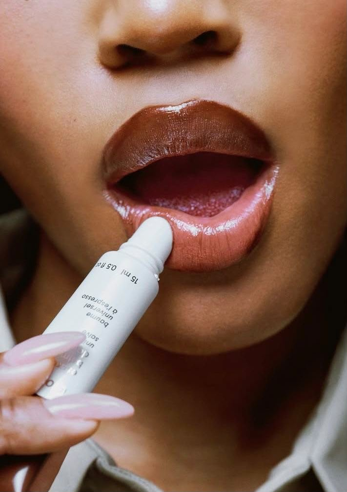

About Us

Welcome to Lip Couture, where beauty meets confidence and every lip tells a story.
At Lip Couture, we believe beauty is personal, powerful, and meant to be expressed with confidence. Our brand was created with one simple idea in mind: your lips should be as unique and beautiful as you are. Lip Couture is more than just a beauty brand. It is a celebration of individuality, confidence, creativity, and self-expression. Whether you prefer a soft everyday nude, a romantic pink, a classic red, or a bold statement shade, our collection is designed to help you create a look that feels completely your own.Our Collection
Lip Couture was born from a passion for beauty and the belief that a great lip product can transform not only your look, but also how you feel. We wanted to create a brand that combines the elegance of couture fashion with the accessibility and creativity of modern beauty. Just as couture is carefully designed with attention to detail, we believe every lip product should feel special. From the shade and finish to the overall experience, we pay attention to the little things that make a big difference. Our journey is inspired by people who aren't afraid to express themselves. We want Lip Couture to be a part of your everyday moments—from getting ready for work or a casual day out to preparing for a special occasion or a night on the town.What We Believe
At Lip Couture, we believe that makeup isn't about changing who you are. It's about enhancing what already makes you beautiful. Our products are created to give you the freedom to experiment, express your mood, and discover new sides of your personal style. We celebrate every complexion, personality, and beauty preference because there is no single definition of beautiful.Confidence
A beautiful lip can be the finishing touch that makes you feel ready to take on the world. We create products that inspire confidence and help you feel your best. Your makeup should reflect you. From subtle and sophisticated to bold and fearless, Lip Couture gives you the freedom to create your own signature look. We believe beauty products should be enjoyable to use and carefully considered. We are committed to offering products that combine beautiful shades, appealing finishes, and a luxurious beauty experience.Individuality
There is no right or wrong way to wear lipstick. Lip Couture celebrates personal style and encourages you to wear your favorite shades your way.Our Collection
Our lip collection is designed to complement every kind of beauty routine. Whether you're building a minimalist makeup look or creating a glamorous statement, there is a Lip Couture shade for every occasion. Explore soft nudes and neutrals for effortless everyday beauty, romantic pinks for a fresh and feminine look, rich reds for timeless glamour, and deeper statement shades when you want to stand out. We believe your lipstick collection should be as versatile as your personality—because every day can call for something different.Our Commitment to You
Our customers are at the center of everything we do. We aim to make your experience with Lip Couture feel beautiful from the moment you discover our brand to the moment you apply your favorite shade. We continuously look for ways to improve, listen to our customers, and bring fresh ideas to our collection. Your feedback, creativity, and support help shape the future of Lip Couture.Beauty Made for You
Lip Couture is for anyone who believes that beauty should be fun, expressive, and empowering. Whether lipstick is an everyday essential for you or something you reach for when you want an extra touch of glamour, we want every product to help you feel confident in your own skin. We are here to inspire you to experiment with color, embrace your personal style, and create looks that make you feel amazing.Because beauty isn't about fitting into a trend—it's about creating your own. Welcome to Lip Couture. Wear your color. Own your look. Be unapologetically you.
Because when your lips feel beautiful, you feel unstoppable. 💋